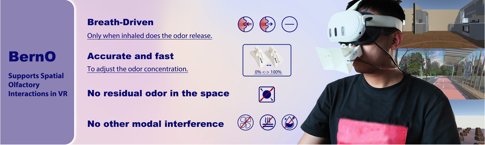

I will pursue my PhD in Alex Lamb’s group at Tsinghua University starting in 2027, as a joint PhD student at Shanghai Qi Zhi Institute (SQZ).
My research focuses on multimodal perception and fusion for quadruped and humanoid robots. I study vision-olfaction fusion for robot navigation and whole-body tactile learning for humanoid loco-manipulation.
I am an undergraduate in Digital Media Art at the Communication University of China (2023–2027), with a curriculum focused on human-computer interaction. My research experience spans Tsinghua University’s Future Laboratory, TEA Lab with Huazhe Xu, and Xu Lab with Mengdi Xu.
Adapting pretrained vision-language-action policies with whole-body touch and tactile-anchored multimodal prediction for contact-rich humanoid control.
VismellNav: Learning Vision-Olfaction Fusion for Robust Odor Source Navigation
Fusing vision, distributed olfactory sensing, and proprioception with an adaptive flow-matching policy to guide quadrupeds toward hidden odor sources in unseen environments.
03

CHI 2026Olfactory HCI
BernO: A Breath-Driven Odor Display for Spatial Olfactory Interaction in VR